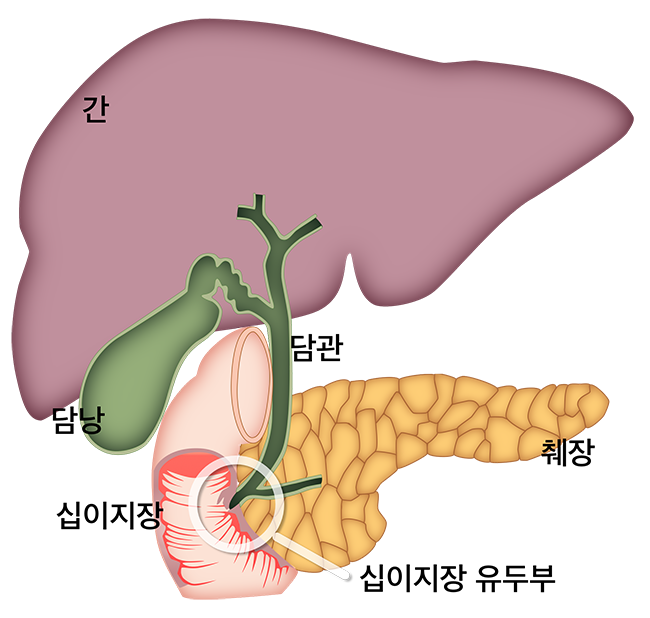

| 각종 소화액과 담즙이 배출되는 담낭, 담도, 췌장(관)에는 담석증 같은 양성질환과 담관암·췌장암 같은 악성질환이 생기기도 합니다.
이런 질환의 진단과 치료를 위한 가장 중요한 검사인 ‘담·췌관 내시경 시술’을 함께 알아 볼까요? |
|  |
| 특수내시경과 방사선투시기를 동시에 이용한 시술로, 그림과 같이 내시경을 십이지장까지 삽입하고
십이지장 유두부란 작은 구멍을 통하여 담관 및 췌관을 검사합니다.
필요시에는 조직검사, 담석제거, 담즙배액 등 의 치료도 할 수 있는 아주 중요한 시술입니다. 하지만 십이지장 유두부, 담관과 췌관의 특이한 구조로 인하여 시술과정에서 합병증이 발생하기도 합니다. |